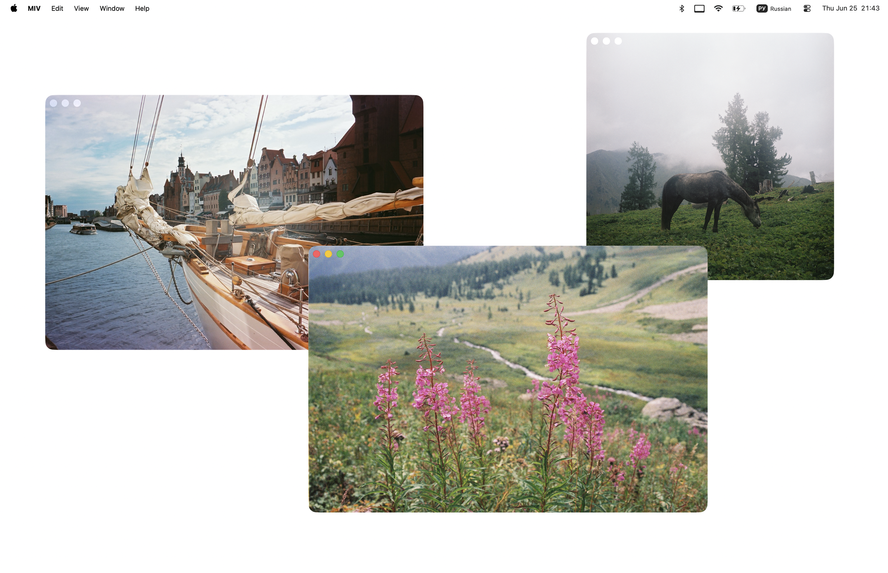

Open multiple windows
Compare images side by side or keep many open at once.
Simple. Native. Focused on you.
A lightweight Mac image viewer for opening many photos side by side, browsing folders, rotating, zooming, and cleaning up quickly. For MacBook users who miss the simple Windows image viewer.

Compare images side by side or keep many open at once.
Clean interface with no distractions. Just your images.
Follows macOS design and feels right at home.
Built for speed and efficiency. Works the way you do.